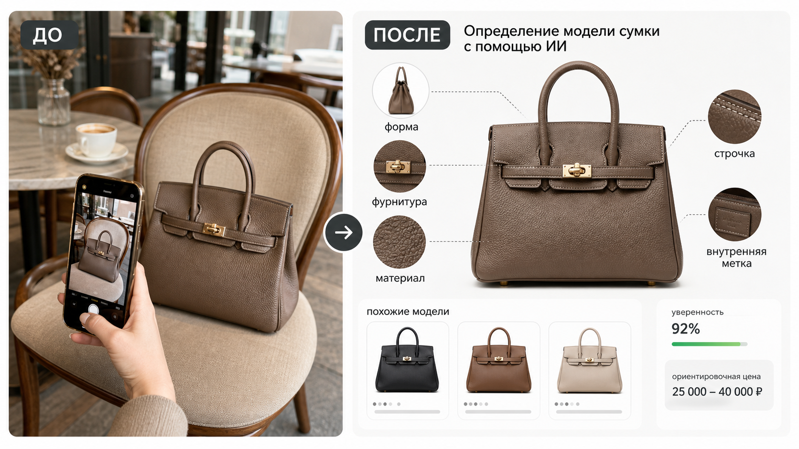

Промтзилла
Для сумок важны форма, ручки, замок, кожа, швы, внутренние детали и пропорции. Этот промт заставляет ИИ смотреть на них последовательно.

Пошаговая инструкция
- 1Сделай фото сумки спереди, сбоку, внутри и крупно фурнитуру, швы, замок, ручки и бирку.
- 2Загрузи снимок в инструмент определения модели сумки по фото.
- 3Скопируй промт и попроси разделить вероятную модель, похожие варианты и признаки.
- 4Если нужна цена, проси только ориентировочный диапазон и источник логики.
- 5Не используй ответ как проверку подлинности без эксперта и документов.
Пример результата
На обложке показан типичный сценарий: слева исходное фото, справа результат, который можно получить через инструмент определения модели сумки по фото.
Промт
RU
Определи сумку на фото. Сделай структурированный ответ: — вероятный бренд или стиль, если бренд не виден; — вероятная модель или тип сумки; — материал и фактура; — форма, размер, ручки, застёжка, фурнитура, швы и внутренние детали; — примерный ценовой диапазон только как ориентир; — уровень уверенности; — похожие модели, с которыми можно перепутать; — какие фото нужны для уточнения: бирка, внутренняя часть, фурнитура, дно, застёжка. Не подтверждай подлинность по фото. Если логотипа нет или сумка вымышленная, дай описание стиля вместо точного названия.
EN
Identify the handbag in the photo. Give a structured answer: — probable brand or style if the brand is not visible; — probable model or bag type; — material and texture; — shape, size, handles, closure, hardware, stitching, and interior details; — approximate price range only as a rough orientation; — confidence level; — similar models it can be confused with; — what photos are needed for clarification: label, interior, hardware, bottom, closure. Do not authenticate the bag from a photo. If there is no logo or the bag is fictional, provide a style description instead of an exact name.
Важно
ИИ может ошибаться в брендах, сезонах и ценах. Для продажи, покупки и проверки оригинальности нужны документы, серийные данные и экспертный осмотр.
Теги